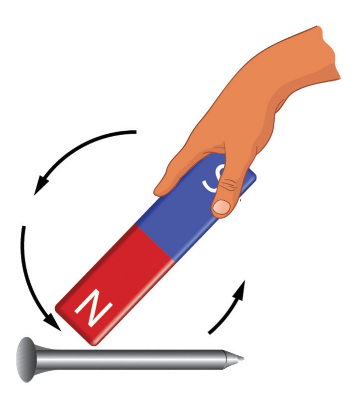

In the second magnetisation method, a piece of unmagnetised material is stroked using a magnet. An existing magnet is moved from one end of the material to the other in the same direction. This process is repeated several times. The pole produced at the end of the stroke is always the opposite of that at the end of the magnet used for stroking. For example, if the north pole of the magnet is used for stroking, then the rod will be magnetised such that its starting end will act as the north pole and the other end as the south pole, as shown in Figure 3.19.

Initially unmagnetized nail Figure 3.19: Single-touch methodAfter completing stroking, care has to be taken not to move the magnet close to the nail because this is taken as a repeat stroke. It disorganises the already aligned dipoles. The stroking method, whereby only one magnetising magnet is used, is called a single-touch method. When two magnets are used, the method is called a double-touch method. In this process, the ends of two magnets of different polarities are positioned at the middle of the iron nail. The two magnets are then moved in a curved motion in the opposite directions as shown in Figure 3.20. The iron nail is stroked a few times along its length. This procedure must be done with care to ensure the proper magnetisation of the iron nail.